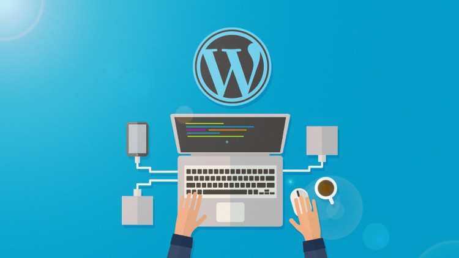

Un développeur WordPress est un développeur web front-end, spécialisé dans le développement de sites web avec WordPress. Son rôle est de créer des sites fonctionnels et performants avec WordPress en personnalisant l'interface et le code selon les besoins du client.
|  |